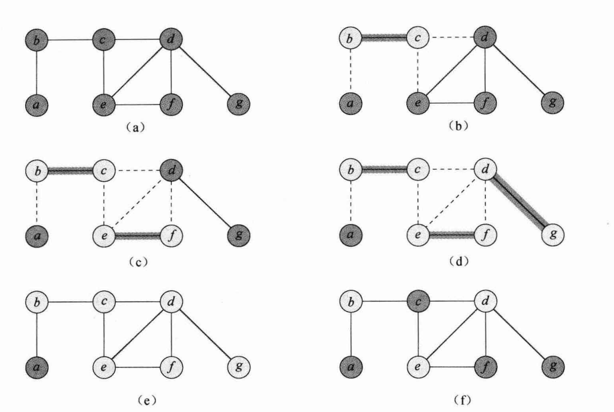

PTAS 与 FPTAS
FPTAS 要求是 \(n\) 和 \(\frac1\epsilon\) 的多项式
三个图论问题
Vertex Cover Problem
给出一个图 \(G(V,E)\), 求是否有大小最多为 \(k\) 的点集 \(S\) 使得 \(\forall e=(u,v)\in E\), \(e\) 至少有一个顶点在 \(S\) 中
Independent Set Problem
给出一个图 \(G(V,E)\), 求是否有大小至少为 \(k\) 的点集 \(S\) 使得 \(\forall u, v \in S\), \(u,v\) 不相连
Clique Problem
给出一个图 \(G(V,E)\), 求是否有大小至少为 \(k\) 的点集 \(S\) 使得 \(\forall u, v \in S\), \(u,v\) 相连
其中定义一个团为点集 \(S\) 使得 \(\forall u, v \in S\), \(u,v\) 相连
规约
顶点覆盖 \(\to\) 独立集
图 \(G(V,E)\) 中存在一个大小为 \(k\) 的顶点覆盖 \(S\), 则 \(\forall e\in E\), \(e\) 至少有一个顶点在 \(S\) 中
则对于 \(V-S\), \(\forall e\in E\), \(e\) 至多有一个顶点在 \(V-S\) 中
就是说，\(V-S\) 中任意两点不相连 (如果相连，就有一个边，两个顶点都在 \(V-S\) 中)
所以 \(V-S\) 是独立点集
所以 \(S\) 是一个大小为 \(k\) 的顶点覆盖相当于 \(V-S\) 是一个大小为 \(n-k\) 的独立集
独立集 \(\to\) 团
如果 \(G(V,E)\) 中有一个独立点集 \(S\), 则 \(S\) 在图中两两不相连，则在反图 \(\bar G(V, \bar E)\) 中一定两两相连 (可以想想为什么)
所以 \(G\) 中有一个大小为 \(k\) 的独立点集相当于 \(\bar G\) 中有一个大小为 \(k\) 的团
顶点覆盖贪心
1. 正确的贪心
算法运行时间是 \(O(V+E)\), 为多项式 证明这个算法是 \(2\) 近似的C = [] while(!E.empty()){ (u,v) = arbitrary edge of E C = C + u + v remove edges in E that are incident to u or v } return C
证明:
设 \(A\) 为算法每一步选出的边集
因为对于任意一组最优解 \(C^*\), \(A\) 中的边一定包含至少一个 \(C^*\) 中的点, 并且 \(A\) 中每一条边都是在删除了上一条边后得出, 即任意两条边没有公共端点, 则两条边不会被 \(C^*\) 中同一个点覆盖, 所以每条边都被不同的 \(C^*\) 中的点覆盖, 并且至少一个, 所以 \(|A|\leq |C^*|\)
同时贪心解为所有 \(e\in A\) 的两个端点, 所以 \(|C|=2|A|\)
所以 \(|C|= 2|A|\leq 2|C^*|\)
所以是 \(2\) 近似
同时, 为了证明近似比不会比 \(2\) 更好, 给出一个例子:

这里算法得出了除了 \(a\) 以外的 \(6\) 个点
而最优解是 \(b,d,e\) 这 \(3\) 个点
所以近似比只能是 \(2\)
2. 错误的贪心
每次都选择度数最大的点, 删去相连的边
证明这个算法不是 \(2\) 近似的
证明:
考虑二分图
\(11/5>2\)
3. 树上贪心
给出一个线性贪心算法, 找出一颗树的最优顶点覆盖
直接遍历整棵树, 叶子不选, 如果一个节点所有儿子都没选, 就选择这个节点, 否则不选
注意找到的是最优解, 不仅仅是近似解
First Fit Decreasing
已知对于任意 \(L\), 满足 \(FFD(L)\leq \frac{11}{9}OPT(L)+\frac{6}9\)
同时已知，决定两个盒子是否足够存下当前这组物品 是 \(NPC\) 问题
证明: \(FFD(L)\leq \frac{3}{2}OPT(L)\), 并且除非 \(P=NP\), 否则 \(\frac 32\) 是最好的近似比例
证明：
对于 \(OPT(L) \geq 3\), 有 \(FFD(L)\leq \frac{11}{9}OPT(L)+\frac{6}9\leq \frac{3}{2}OPT(L)\) 成立
对于 \(OPT(L)=1\), \(FFD(L)=1\) 总是成立
对于 \(OPT(L)=2\), 那么 \(FFD(L) \leq \frac {28}9\)
由于 \(FFD(L)\) 是整数，所以 \(FFD(L) \leq 3\), 成立
接下来证明是最佳比例
如果存在 \(\alpha < \frac32\), 那么如果 \(FFD(L)\geq 3\), 那么 \(OPT(L) > \frac{1}{\alpha}FFD(L) \geq 3\cdot \frac23=2\), 所以 \(FFD(L) > 2\), 这回答了上面的 \(NPC\) 问题，即不能用两个盒子存下
如果 \(FFD(L)\leq 2\), 那么 \(OPT(L) \leq FFD(L) \leq 2\), 所以, 这回答了上面的 \(NPC\) 问题，即能用两个盒子存下
所以 \(NPC\) 问题被我们用多项式时间解决了，所以 \(P=NP=NPC\)
所以如果假设 \(P\not=NP\), 就不存在更好的比例 \(\alpha < \frac32\)
K-Center and Dominating Set
K-Center 的 \(2\) 近似算法
1. 二分答案+贪心
二分答案，每次选取任意点，把 \(2r\) 以内的点删去
最后判断选取的点数是否超过 \(k\) 来决定二分范围
由于二分时选取了 \(2r\) 内的点，所以他构造出了 \(2\) 的近似解
2. 更好的贪心
先随机选点组成中心点集合 \(C\)，将点集 \(S\) 中距离 \(C\) 中的点最远的点 \(s\) 加入 \(C\)
即将 \(\displaystyle argmax_{s\in S}\{dist(s,C)\}\) 加入 \(C\)
注意这里 \(\displaystyle dist(s,C)=argmin_{c\in C}dist(s,c)\)
证明：
对于最优解 \(c_1^*, \cdots, c_k^*\), 画出 \(k\) 个半径为 \(r^*\) 的圆
如果每个圆里只有一个我们找出的解 \(c_i\)
那么圆内任意一点到 \(c_i\) 的距离不超过 \(2r^*\), 所以 \(r\leq 2r^*\)
如果有一个圆里有两个我们找出的解 \(c_i,c_j\)
不妨设 \(i<j\)
由于 \(c_j\) 是我们通过更新答案得出的中心，这说明如果第 \(j\) 步更新完的答案半径为 \(r_j\), 首先任意的中心点 \(c_i, i<j\) 满足 \(dist(c_i,c_j)\geq r_j\), 这是因为 \(dist(c_j, C_{j-1})\) 本身取的是 \(c_j\) 距离最近的 \(c_k\), 所以 \(dist(c_i,c_j) \geq dist(c_k,c_j)=r_j\), 并且由于答案不断更新，是单调不增的，所以 \(r_j\geq r\)，所以最终得到的答案满足 \(r \leq dist(c_i,c_j)\)
并且两点间距离 \(dist(c_i,c_j) \leq 2r^*\)
所以有 \(2r^* \geq dist(c_i,c_j)\geq r\)
综上这说明了答案是 \(2\) 的近似
思考: 前面的证明假设我们得到的中心点一定在最优解对应的中心点的圆内，那这些中心点有没有可能在最优解的圆之外?
Dominating Set
定义
K-Center 归约到 Dominating Set
在一个完全无向图 \(G(V,E)\) 中, 将两点间距离 \(dist(i,j)=d(e_k)\), 将 \(e_k\) 按 \(d(e_k)\) 升序排序
定义 \(G_i(V,E_i)\), \(E_i={e_1,\cdots,e_i}\), 那么 K-Center 问题等价于找到最小的 \(i\) 使得 \(G_i\) 有一个最大为 \(k\) 的Dominating Set
这个也不难理解，因为 K-Center 最后是要找到距离最大值的最小值，这相当于二分一个最大值，如果小于这个最大值 \(r\) 的边组成的图能够存在一个至多为 \(k\) 的 Dominating Set, 那么 Set 中的点到其他点的距离都是小于这个 \(r\) 的，就相当于这些点是 K-Center 问题的中心点
证明除非 \(P=NP\), 否则 K-Center 没有好于 \(2\) 的近似
定义一个规约问题：
1. \(K-C:\)
一个边集 \(E\), 补全其边集为 \(E'\), 形成完全图 \(G(V,E')\)，且 \(E'\to\{1,2\}\), 即边权值只有 \(1,2\) 两种取值
对于 \(E\)，有
\(w(e)=1, e\in E\)
\(w(e)=2, e\not\in E\)
问 K-Center 在 \(G(V,E')\) 的最大距离
2. \(K-DS:\)
是否有大小为 \(K\) 的 Dominating Set
那么 \(K-DS\to K-C\)
对应答案为 \(Yes\to 1, No\to 2\)
首先已知 Dominating Set 是 \(NPC\) 问题
如果存在一个 \(2-\epsilon\) 的近似，那么对于近似算法求解 \(K-C\) 得出的解 \(r^*\) :
如果 \(r^* \leq 1\), 那么 \(r \leq (2-\epsilon) r^* \leq (2-\epsilon)\)
因为 \(r\) 是整数，所以 \(r=1\), 这回答了 \(K-DS\) 的解为 \(Yes\)
如果 \(r^* \geq 2\), 那么 \(r \geq r^* \geq 2\)
因为 \(r\) 是整数，所以 \(r=2\), 这回答了 \(K-DS\) 的解为 \(No\)
所以我们用多项式时间解决了一个 \(NPC\) 问题
那么 \(P=NP=NPC\)
所以除非 \(P=NP\), 否则 K-Center 没有 \(2-\epsilon\) 的近似
Max Cut Problem
证明贪心是 \(2\) 近似的
对于 \(u\in A\) 有 \(\displaystyle\sum_{v\in A}w_{uv} \leq \sum_{v\in B}w_{uv}\)
所以 \(\displaystyle\sum_{u\in A}\sum_{v\in A}w_{uv} \leq \sum_{u\in A}\sum_{v\in B}w_{uv}\)
即 \(\displaystyle2\sum_{(u,v)\in A}w_{uv}= \sum_{u\in A}\sum_{v\in A}w_{uv} \leq \sum_{u\in A}\sum_{v\in B}w_{uv}=w(A,B)\)
同理由 \(v\in B\) 求和得出 \(\displaystyle 2\sum_{(u,v)\in B}w_{uv}\leq w(A,B)\)
所以有 \(\displaystyle w(A^*,B^*)\leq \sum w_{uv}=\sum_{(u,v)\in A}w_{uv}+\sum_{(u,v)\in B}w_{uv}+w(A,B)\leq 2w(A,B)\)
Spanning Tree Problem
Given an undirected graph \(G=(V,E)\), where \(|V|=n\) and \(|E|=m\).
Let \(F\) be the set of all spanning trees of \(G\).
Define \(d(u)\) to be the degree of a vertex \(u\in V\).
Define \(w(e)\) to be the weight of an edge \(e\in E\).
We have the following three variants of spanning tree problems:
(1)
Max Leaf Spanning Tree: find a spanning tree \(T\in F\) with a maximum number of leaves.(2)
Minimum Spanning Tree: find a spanning tree T∈F with a minimum total weight of all the edges in T.(3)
Minimum Degree Spanning Tree: find a spanning tree T∈F such that its maximum degree of all the vertices is the smallest.For a pair of edges \((e,e')\) where \(e\in T\) and \(e'\in (G−T)\) such that \(e\) belongs to the unique cycle of \(T\cup e'\), we define
edge-swap(e, e')to be \((T−e)\cup e'\)Here is a local search algorithm:
Here \(Cost(T)\) is the number of leaves in \(T\) in Max Leaf Spanning Tree;T = any spanning tree in F; while (there is an edge-swap(e, e') which reduces Cost(T)) { T = T - e + e'; } return T;or is the total weight of \(T\) in Minimum Spanning Tree;
or else is the minimum degree of \(T\) in Minimum Degree Spanning Tree.
Do the algorithm give optimal solutions to both the three problems?
\((1)\) 和 \((3)\) 反例：\(5\) 阶和 \(8\) 阶菊花图
对于 \(1\), 从最外围一条链出发
考虑：
对于 \(3\), 从最中间菊花图出发，选择出两个度为 \(3\) 的节点后，算法就卡在 \(3\) 不会下降了，因为一条边不能同时减少两个节点的度
考虑:
对于 \(1\) 和 \(2\) 和 \(4\) 号点，无法同时变成度数小于 \(3\) 的状态，因为一条边不能让两个不相邻的点同时度数减 \(1\)
这说明 \(Cost(T)\) 不会再减小，所以 \(Cost(T)=3\)
但是最优解为 \(2\)
\(NP\) 问题
\(coNP\)
\(HCP\): Hamilton Cycle Problem
判断是否有 Hamilton 环 \(\to NP\)
判断是否没有 Hamilton 环 \(\to coNP\), 不能多项式时间验证!
\(TSP\prec HCP\)
如果存在一个 Hamilton 环, 说明存在一条路线遍历所有城市 \(\checkmark\)
\(\star\) 如果边权可以任意大, 不存在有近似比的近似算法!
最小着色
\(2\) 色的最小着色 \(\prec\) 最大割
MST 与 最大权森林
MST: \(O(N)\) 近似随机算法
最大全森林: \(O(N)\) 近似算法
Halting
不存在判定是否存在 infinite loop 的程序
不能自己判定自己
Activity Selection Problem
Short-First 是 \(2\) 近似的
持续时间短的优先选
记账分析
假设 \(OPT\) 每个活动有一块钱, 现在要给 \(SF\) 钱
如果 \(a_i\in SF\) 且 \(a_i \in OPT\), 那么 \(a_i\) 自己给自己一块钱
如果 \(a_i\in OPT\) 且 \(a_i \not\in SF\), 那么一定有一个 \(a_j\in SF\) 与 \(a_i\) 不兼容
那么就让 \(a_i\) 给 \(a_j\) 1块钱
所以, 每个 \(OPT\) 里的活动都给出了 \(1\) 块钱, 并且每个 \(SF\) 里的活动最多收到 \(2\) 块钱 (最多有两个和他冲突的)
所以 \(SF\geq OPT/2\)
所以是 \(2\) 近似
例
\([5,8], [1,6], [7, 13]\)
\(SF={[5,8]}\)
\(OPT={[1,6], [7,13]}\)
归约
归约到子问题
注意 \(A\prec B\), 说明把 \(A\) 的全集映射到 \(B\) 的 子集
例1:
min degree spanning tree: 是否存在一个最大度为 \(k\) 的生成树
Hamilton Path Problem: 是否存在一个遍历所有节点的路径
取 \(k=2\), 则 \(HPP \prec MDST\)
注意是归约到了 子集
例2:
Long Cycle problem: 是否存在一个遍历至少一半节点的环
Hamilton Cycle problem: 是否存在一个遍历所有节点的环
\(HCP\prec LCP\)
只要把原图复制一遍, 两个图组成一个新的图
如果存在一个遍历至少一半节点的环, 那他一定是一个原图的 Hamilton 环
如果不存在 Long Cycle, 就不存在 Hamilton 环
-
定义一个优化问题, Longest Cycle Problem: 找出一个最长的环
-
Long Cycle Problem 是 \(NP\) 问题, Longest Cycle Problem 不是 \(NP\) 问题, 是 \(NPH\) 问题
- Hamilton Cycle 可以归约到 Longest Cycle, 可以让每条边权为 \(1\), 最后判断环长是不是 \(n\)
Shortest Processing Time
贪心是 \(2\) 近似
进一步, 如果有 \(m\) 个机器, 贪心是 \(\frac{2m-1}{m}\) 近似
Load Processing
LPT 是 \(3/2\) 近似的
LPT 是 \(4/3\) 近似的
Bin Packing
next fit
first fit
first fit decreasing
\(FFD\leq 11/9OPT+6/9\)
online
没有好于 \(5/3\) 近似比的算法
例子:
箱子大小为 \(50\)
- 一堆小物品, 和为 \(34\)
- \(17,17\)
- \(26,26,26\)
\(OPT:[17,26,x],[17,26,y],[26,z],x=7,y=7,z=20\)
\(A:[x],[17,17],[26],[26],[26],x=34\)
Facility Location Problem
当前解集为 \(S\) 定义 \(C_r(S)=\sum_{j\in V-S}\min_{i\in S} c(i,j), C_f(S)=\sum_{i\in S} f_i\) 证明 \(C_r(S)\leq C(S^*)\)
如果 \(C_r(S)>C(S^*)\), 那么有
设 \(S'=S^*\cup S\), 则 \(C_f(S^*)+C_f(S) \geq C_f(S')\)
并且 \(S'\) 已经是并集, \(C_r(S')\) 一定不会比 \(C_r(S^*)\) 差
说明 \(S'\) 比 \(S\) 更优, 算法没有结束
所以一定有 \(C_r(S)\leq C(S^*)\)
背包
优化问题 \(\to\) 判定问题
判定是否有价值大于等于 \(k\) 的方案
使用判定版本猜出优化问题的解和具体方案
贪心是 \(2\) 近似的
2个背包
使用贪心
按照 \(p_i/w_i\) 排序, 按照 next fit 放
近似比为 \(2\)
因为两个背包都是性价比最高的物品, 价值加在一起比最优解任意单个背包的价值都要高
所以大于等于 \(OPT/2\)
进一步, 任意个数背包使用贪心 + next fit 都是 \(2\) 近似, 且不会更好
例子就是, 背包大小为 \(1\)
有 \(m\) 个价值和重量都是 \(\frac 12+\epsilon\) 的物品
还有 \(m\) 个价值和重量都是 \(\frac 12-\epsilon\) 的物品
贪心价值是 \(\frac{m}{2}(1+2\epsilon)\)
最优是 \(m\)
所以还是 \(\displaystyle \frac{2}{1+2\epsilon}\to 2\)
matching
matching \(\prec\) vertex cover
stable matching
婚姻匹配问题
一个贪心: 假设 boys 主动表白 girls
boys 一次表白自己认为最好的 girl, girls 挑一个最好的 boy
证明 主动的 boys 获得的解一定是所有 stable matching 中最好的
同时 girls 一定是最差的
- 如果 girls 可以撒谎, 可能获得更好的解